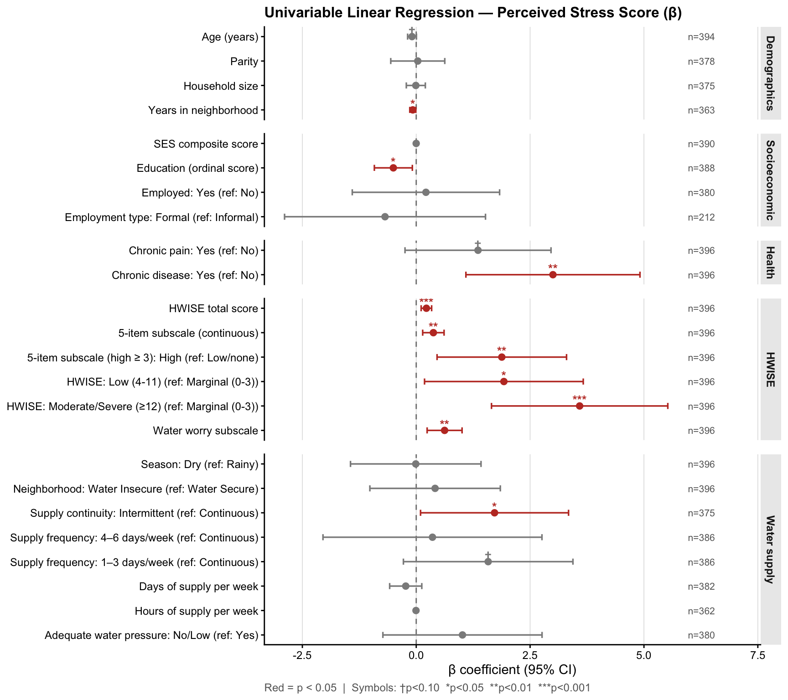
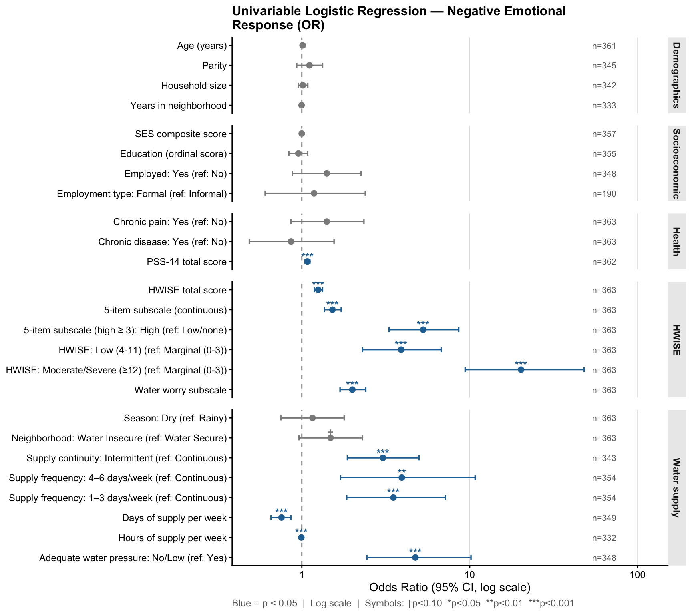

Last updated: 2026-03-21
Checks: 6 1
Knit directory: QUAIL-Mex/
This reproducible R Markdown analysis was created with workflowr (version 1.7.1). The Checks tab describes the reproducibility checks that were applied when the results were created. The Past versions tab lists the development history.
The R Markdown file has unstaged changes. To know which version of
the R Markdown file created these results, you’ll want to first commit
it to the Git repo. If you’re still working on the analysis, you can
ignore this warning. When you’re finished, you can run
wflow_publish to commit the R Markdown file and build the
HTML.
Great job! The global environment was empty. Objects defined in the global environment can affect the analysis in your R Markdown file in unknown ways. For reproduciblity it’s best to always run the code in an empty environment.
The command set.seed(20241009) was run prior to running
the code in the R Markdown file. Setting a seed ensures that any results
that rely on randomness, e.g. subsampling or permutations, are
reproducible.
Great job! Recording the operating system, R version, and package versions is critical for reproducibility.
Nice! There were no cached chunks for this analysis, so you can be confident that you successfully produced the results during this run.
Great job! Using relative paths to the files within your workflowr project makes it easier to run your code on other machines.
Great! You are using Git for version control. Tracking code development and connecting the code version to the results is critical for reproducibility.
The results in this page were generated with repository version 62e53ab. See the Past versions tab to see a history of the changes made to the R Markdown and HTML files.
Note that you need to be careful to ensure that all relevant files for
the analysis have been committed to Git prior to generating the results
(you can use wflow_publish or
wflow_git_commit). workflowr only checks the R Markdown
file, but you know if there are other scripts or data files that it
depends on. Below is the status of the Git repository when the results
were generated:
Ignored files:
Ignored: .DS_Store
Ignored: .RData
Ignored: .Rhistory
Ignored: .Rproj.user/
Ignored: analysis/.DS_Store
Ignored: analysis/.RData
Ignored: analysis/.Rhistory
Ignored: analysis/Hrs_by_HWISE score.png
Ignored: analysis/stacked_barplot.png
Ignored: code/.DS_Store
Ignored: data/.DS_Store
Ignored: figure/.DS_Store
Ignored: output/.DS_Store
Ignored: output/figures/.DS_Store
Untracked files:
Untracked: .claude/
Untracked: output/figures/07.aim2_emo_forest_hwise.png
Untracked: output/figures/07.aim2_emo_forest_main.png
Untracked: output/figures/07.aim2_pss_forest_hwise.png
Untracked: output/figures/07.aim2_pss_forest_main.png
Untracked: output/tables/09.Tables_UV_ForestPlot_Results.docx
Untracked: output/tables/~$.Table_Top5_Emotion_models.docx
Unstaged changes:
Modified: analysis/07.aim2_emo_models.Rmd
Modified: analysis/07.aim2_pss_models.Rmd
Modified: analysis/08.forest_plot_tables.R
Modified: analysis/08.multivariate_models.Rmd
Modified: analysis/08.univariate_models.Rmd
Modified: analysis/09.uv_forest_plot_tables.R
Modified: output/figures/07.famd_cos2_heatmap.png
Modified: output/figures/07.famd_var_contrib.png
Modified: output/figures/07.famd_var_map.png
Modified: output/figures/07.pca_heatmap.png
Modified: output/figures/07.pca_loadings.png
Modified: output/figures/07.poly_cor_heatmap.png
Modified: output/figures/07.poly_pca_heatmap.png
Modified: output/figures/07.poly_pca_loadings.png
Deleted: output/figures/panel_a_coef_plot.png
Deleted: output/figures/panel_b_coef_plot.png
Modified: output/tables/07.Table_Top5_Emotion_models.docx
Modified: output/tables/07.Table_Top5_PSS_models.docx
Modified: output/tables/08.multivariate_models.docx
Modified: output/tables/08.multivariate_models_core.docx
Modified: output/tables/Tables_ForestPlot_Results.docx
Modified: output/tables/Tables_UV_ForestPlot_Results.docx
Note that any generated files, e.g. HTML, png, CSS, etc., are not included in this status report because it is ok for generated content to have uncommitted changes.
These are the previous versions of the repository in which changes were
made to the R Markdown (analysis/08.univariate_models.Rmd)
and HTML (docs/08.univariate_models.html) files. If you’ve
configured a remote Git repository (see ?wflow_git_remote),
click on the hyperlinks in the table below to view the files as they
were in that past version.
| File | Version | Author | Date | Message |
|---|---|---|---|---|
| Rmd | 62e53ab | Paloma | 2026-03-21 | upd |
| html | 62e53ab | Paloma | 2026-03-21 | upd |
df <- read.csv("./data/03.Merged_Q1-6_Q16_Q19_Q26_Q28.csv",
stringsAsFactors = FALSE,
na.strings = c(""))
cat("Dimensions:", dim(df), "\n")Dimensions: 397 137 cat("Participants:", nrow(df), "\n")Participants: 397 edu_levels <- c(
"No formal education",
"Incomplete primary (1–5 yrs)",
"Complete primary",
"Incomplete secondary (7–8 yrs)",
"Complete secondary",
"Incomplete high school (10–11 yrs)",
"Complete high school",
"Incomplete university (13–15 yrs)",
"Complete university",
"Postgraduate"
)
df_table <- df %>%
mutate(
Age = clean_for_table(D_AGE),
Yrs_in_nbhd = clean_for_table(D_LOC_TIME_CLEAN),
HH_size = clean_for_table(D_HH_SIZE),
Parity = clean_for_table(D_CHLD_CLEAN),
Season = factor(SEASON, levels = c(0, 1), labels = c("Rainy", "Dry")),
Education = factor(
dplyr::recode(as.character(SES_EDU_CAT_CLEAN),
"Incomplete primary" = "Incomplete primary (1–5 yrs)",
"Incomplete secondary" = "Incomplete secondary (7–8 yrs)",
"Incomplete high school" = "Incomplete high school (10–11 yrs)",
"Incomplete university" = "Incomplete university (13–15 yrs)"
),
levels = edu_levels, ordered = TRUE
),
SES_Score = clean_for_table(SES_SC_Total),
Edu_Score = as.numeric(Education),
Employed = factor(clean_for_table(D_EMP_CLEAN),
levels = c(0, 1), labels = c("No", "Yes")),
Employment_type = factor(clean_for_table(D_EMP_FORM_CLEAN),
levels = c(0, 1), labels = c("Informal", "Formal")),
Hormonal_tx = factor(clean_for_table(HLTH_TTM_CAT),
levels = c(0, 1), labels = c("No", "Yes")),
Medication = factor(clean_for_table(HLTH_MED_CAT),
levels = c(0, 1), labels = c("No", "Yes")),
Chronic_pain = factor(clean_for_table(HLTH_CPAIN_CAT),
levels = c(0, 1), labels = c("No", "Yes")),
Chronic_dis = factor(clean_for_table(HLTH_CDIS_CAT),
levels = c(0, 1), labels = c("No", "Yes")),
HWISE_Total = clean_for_table(HW_TOTAL),
Water_worry = clean_for_table(as.numeric(HW_WORRY_SUB)),
Water_5sub = clean_for_table(HW_MEX_5SUB),
HWISE_Cat = factor(
case_when(
is.na(clean_for_table(HW_TOTAL)) ~ NA_character_,
clean_for_table(HW_TOTAL) <= 3 ~ "Marginal (0-3)",
clean_for_table(HW_TOTAL) <= 11 ~ "Low (4-11)",
TRUE ~ "Moderate/Severe (≥12)"
),
levels = c("Marginal (0-3)", "Low (4-11)", "Moderate/Severe (≥12)")
),
HWI_5sub_hi = factor(
case_when(
is.na(Water_5sub) ~ NA_character_,
Water_5sub >= 3 ~ "High",
TRUE ~ "Low/none"
),
levels = c("Low/none", "High")
),
HW_Worry = clean_for_table(HW_WORRY),
HW_Interr = clean_for_table(HW_INTERR),
HW_Clothes = clean_for_table(HW_CLOTHES),
HW_Plans = clean_for_table(HW_PLANS),
HW_Food = clean_for_table(HW_FOOD),
HW_Hands = clean_for_table(HW_HANDS),
HW_Body = clean_for_table(HW_BODY),
HW_Drink = clean_for_table(HW_DRINK),
HW_Angry = clean_for_table(HW_ANGRY),
HW_Sleep = clean_for_table(HW_SLEEP),
HW_None = clean_for_table(HW_NONE),
HW_Shame = clean_for_table(HW_SHAME),
PSS_Total = clean_for_table(PSS_TOTAL)
)df_water <- df %>%
mutate(
W_Continuity = case_when(
is_sentinel_str(MX3_CONT_INT) ~ NA_character_,
str_detect(tolower(MX3_CONT_INT), "^contin") ~ "Continuous",
str_detect(tolower(MX3_CONT_INT), "^intermi|cortan|deja") ~ "Intermittent",
str_detect(tolower(MX3_CONT_INT), "disminu") ~ "Reduced pressure/flow",
MX3_CONT_INT %in% c("", "N/A") | is.na(MX3_CONT_INT) ~ NA_character_,
TRUE ~ "Other"
),
W_Continuity = factor(W_Continuity,
levels = c("Continuous", "Intermittent",
"Reduced pressure/flow", "Other")),
W_Freq_raw = coalesce(MX4_WFREQ, MX4_W_FREQ),
W_Frequency = case_when(
is_sentinel_str(W_Freq_raw) ~ NA_character_,
str_detect(tolower(W_Freq_raw), "^diari|every day") ~ "Daily",
str_detect(tolower(W_Freq_raw), "^intermi") ~ "Intermittent",
str_detect(tolower(W_Freq_raw), "1 a 3|1-3") ~ "1–3 days/week",
str_detect(tolower(W_Freq_raw), "4 a 6|4-6") ~ "4–6 days/week",
str_detect(tolower(W_Freq_raw), "^contin") ~ "Continuous",
W_Freq_raw %in% c("", "N/A") | is.na(W_Freq_raw) ~ NA_character_,
TRUE ~ "Other"
),
W_Frequency = factor(W_Frequency,
levels = c("Continuous", "Daily", "4–6 days/week",
"1–3 days/week", "Intermittent", "Other")),
W_Hrs_week = suppressWarnings(
ifelse(is_sentinel_str(MX5_WFREQ_HRS_PER_WEEK), NA,
as.numeric(str_extract(MX5_WFREQ_HRS_PER_WEEK, "^[0-9\\.]+")))
),
W_Hrs_week = ifelse(W_Hrs_week %in% MISSING_CODES | W_Hrs_week > 168, NA, W_Hrs_week),
W_Days_week = suppressWarnings(
ifelse(is_sentinel_str(MX5_WFREQ_NDAYS), NA,
as.numeric(str_extract(MX5_WFREQ_NDAYS, "^[0-9]+")))
),
W_Days_week = ifelse(W_Days_week %in% MISSING_CODES | W_Days_week > 7, NA, W_Days_week),
W_Pressure = case_when(
is_sentinel_str(MX6_WPRESS) ~ NA_character_,
str_detect(tolower(MX6_WPRESS), "^s[ií]|^yes|^buena|^bien") ~ "Yes",
str_detect(tolower(MX6_WPRESS), "^no|^baja|^poca") ~ "No/Low",
MX6_WPRESS %in% c("", "N/A") | is.na(MX6_WPRESS) ~ NA_character_,
TRUE ~ "Variable"
),
W_Pressure = factor(W_Pressure, levels = c("Yes", "No/Low", "Variable")),
W_WS_LOC_F = factor(W_WS_LOC, levels = c("WS", "WI"),
labels = c("Water Secure", "Water Insecure"))
)EMO_raw <- suppressWarnings(as.numeric(as.character(df$MX26_EM_HHW_CAT)))
EMO_raw <- ifelse(EMO_raw %in% MISSING_CODES, NA, EMO_raw)
df_reg <- df_table %>%
mutate(
EMO_NEG = case_when(
EMO_raw == 0 ~ 0L,
EMO_raw == 1 ~ 1L,
TRUE ~ NA_integer_
),
W_WS_LOC_F = df_water$W_WS_LOC_F,
W_Continuity = df_water$W_Continuity,
W_Frequency = df_water$W_Frequency,
W_Days_week = df_water$W_Days_week,
W_Hrs_week = df_water$W_Hrs_week,
W_Pressure = df_water$W_Pressure
)
# Desired within-group display order (lower number = appears first in plot/table)
predictor_order <- c(
# Demographics
Age = 1, Parity = 2, HH_size = 3, Yrs_in_nbhd = 4,
# Socioeconomic
SES_Score = 1, Edu_Score = 2, Employed = 3, Employment_type = 4,
# Health
Chronic_pain = 1, Chronic_dis = 2, PSS_Total = 3,
# HWISE (Water_worry moved to end)
HWISE_Total = 1, Water_5sub = 2, HWI_5sub_hi = 3, HWISE_Cat = 4, Water_worry = 5,
# HWISE items
HW_Worry = 1, HW_Interr = 2, HW_Clothes = 3, HW_Plans = 4,
HW_Food = 5, HW_Hands = 6, HW_Body = 7, HW_Drink = 8,
HW_Angry = 9, HW_Sleep = 10, HW_None = 11, HW_Shame = 12,
# Water supply
Season = 1, W_WS_LOC_F = 2, W_Continuity = 3, W_Frequency = 4,
W_Days_week = 5, W_Hrs_week = 6, W_Pressure = 7
)
# Shared predictor labels
pred_labels <- c(
Age = "Age (years)",
Parity = "Parity",
HH_size = "Household size",
Yrs_in_nbhd = "Years in neighborhood",
Season = "Season",
SES_Score = "SES composite score",
Edu_Score = "Education (ordinal score)",
Employed = "Employed",
Employment_type = "Employment type",
Chronic_pain = "Chronic pain",
Chronic_dis = "Chronic disease",
PSS_Total = "PSS-14 total score",
HWISE_Total = "HWISE total score",
Water_5sub = "5-item subscale (continuous)",
HWI_5sub_hi = "5-item subscale (high \u2265 3)",
HWISE_Cat = "HWISE",
Water_worry = "Water worry subscale",
HW_Worry = "HW1: Worried about water",
HW_Interr = "HW2: Water interrupted",
HW_Clothes = "HW3: Unable to wash clothes",
HW_Plans = "HW4: Changed plans",
HW_Food = "HW5: Unable to prepare food",
HW_Hands = "HW6: Unable to wash hands",
HW_Body = "HW7: Unable to wash body",
HW_Drink = "HW8: No drinking water",
HW_Angry = "HW9: Felt angry",
HW_Sleep = "HW10: Went to sleep thirsty",
HW_None = "HW11: Had no water at all",
HW_Shame = "HW12: Felt shame",
W_WS_LOC_F = "Neighborhood",
W_Continuity = "Supply continuity",
W_Frequency = "Supply frequency",
W_Days_week = "Days of supply per week",
W_Hrs_week = "Hours of supply per week",
W_Pressure = "Adequate water pressure"
)
# Reference levels for every factor predictor in df_reg
ref_levels <- sapply(names(df_reg), function(v) {
x <- df_reg[[v]]
if (is.factor(x)) levels(x)[1] else NA_character_
})
# Build a display label that appends level & ref for categorical terms
make_display_label <- function(predictor, term, label) {
if (predictor == term) return(label) # continuous
level <- gsub(predictor, "", term, fixed = TRUE)
ref <- ref_levels[predictor]
if (!is.na(ref)) {
paste0(label, ": ", level, " (ref: ", ref, ")")
} else {
paste0(label, ": ", level)
}
}
# Helper: univariable linear regression
run_lm_uv <- function(outcome, predictors, data, labels) {
map_dfr(predictors, function(v) {
dat <- data[, c(outcome, v)]
if (v == "W_Pressure") {
dat <- dat[is.na(dat[[v]]) | dat[[v]] != "Variable", ]
dat[[v]] <- droplevels(dat[[v]])
}
if (v == "W_Frequency") {
dat <- dat[is.na(dat[[v]]) | dat[[v]] != "Other", ]
dat[[v]] <- droplevels(dat[[v]])
}
if (v == "W_Continuity") {
dat <- dat[is.na(dat[[v]]) | dat[[v]] != "Other", ]
dat[[v]] <- droplevels(dat[[v]])
}
dat <- dat[complete.cases(dat), ]
fit <- tryCatch(
lm(as.formula(paste(outcome, "~ .")), data = dat),
error = function(e) NULL
)
if (is.null(fit)) return(NULL)
tidy(fit, conf.int = TRUE) %>%
filter(term != "(Intercept)") %>%
mutate(predictor = v, label = labels[v], AIC = AIC(fit), n = nrow(dat))
})
}
# Helper: univariable logistic regression
run_glm_uv <- function(outcome, predictors, data, labels) {
map_dfr(predictors, function(v) {
dat <- data[, c(outcome, v)]
if (v == "W_Pressure") {
dat <- dat[is.na(dat[[v]]) | dat[[v]] != "Variable", ]
dat[[v]] <- droplevels(dat[[v]])
}
if (v == "W_Frequency") {
dat <- dat[is.na(dat[[v]]) | dat[[v]] != "Other", ]
dat[[v]] <- droplevels(dat[[v]])
}
if (v == "W_Continuity") {
dat <- dat[is.na(dat[[v]]) | dat[[v]] != "Other", ]
dat[[v]] <- droplevels(dat[[v]])
}
dat <- dat[complete.cases(dat), ]
fit <- tryCatch(
glm(as.formula(paste(outcome, "~ .")), data = dat, family = binomial),
error = function(e) NULL
)
if (is.null(fit)) return(NULL)
tidy(fit, conf.int = TRUE, exponentiate = TRUE) %>%
filter(term != "(Intercept)") %>%
mutate(predictor = v, label = labels[v], AIC = AIC(fit), n = nrow(dat))
})
}β (95% CI), p-value, BH-adjusted q-value, and AIC per model. Sorted by predictor group then variable order.
pss_predictors <- c(
# Demographics (Age, Parity, HH_size, Yrs_in_nbhd)
"Age", "Parity", "HH_size", "Yrs_in_nbhd",
# Socioeconomic (SES_Score, Edu_Score, Employed, Employment_type)
"SES_Score", "Edu_Score", "Employed", "Employment_type",
# Health (no hormonal_tx, no medication)
"Chronic_pain", "Chronic_dis",
# HWISE (Water_worry at end)
"HWISE_Total", "Water_5sub", "HWI_5sub_hi", "HWISE_Cat", "Water_worry",
# Water supply
"Season", "W_WS_LOC_F", "W_Continuity", "W_Frequency",
"W_Days_week", "W_Hrs_week", "W_Pressure"
)
pss_results <- run_lm_uv("PSS_Total", pss_predictors, df_reg, pred_labels) %>%
mutate(
q.value = p.adjust(p.value, method = "BH"),
group = group_map[predictor],
group = factor(group, levels = group_order),
var_order = predictor_order[predictor],
display_label = mapply(make_display_label, predictor, term, label)
) %>%
arrange(group, var_order)
pss_tbl <- pss_results %>%
mutate(
`β (95% CI)` = sprintf("%.2f (%.2f, %.2f)", estimate, conf.low, conf.high),
sig = sig_sym(p.value),
p_fmt = case_when(
p.value < 0.001 ~ "<0.001",
TRUE ~ sprintf("%.3f", p.value)
),
q_fmt = case_when(
q.value < 0.001 ~ "<0.001",
TRUE ~ sprintf("%.3f", q.value)
),
AIC_r = round(AIC, 1)
) %>%
select(display_label, n, `β (95% CI)`, sig, p_fmt, q_fmt, AIC_r, p.value) %>%
rename(
Variable = display_label,
N = n,
Sig = sig,
`p-value` = p_fmt,
`q-value (BH)` = q_fmt,
AIC = AIC_r
)pss_sig_rows <- which(pss_tbl$p.value < 0.05)
pss_gt <- pss_tbl %>%
select(-p.value) %>%
gt() %>%
tab_header(
title = md("**Table UV1. Univariable Linear Regression: Predictors of Perceived Stress Score**"),
subtitle = md("Each predictor entered separately as the sole regressor. Grouped by predictor domain.")
) %>%
cols_label(
Variable = md("**Predictor**"),
N = md("***n***"),
`β (95% CI)` = md("**β (95% CI)**"),
Sig = md("**Sig.**"),
`p-value` = md("***p***"),
`q-value (BH)` = md("***q***"),
AIC = md("**AIC**")
) %>%
# Header background
tab_style(
style = list(cell_fill(color = "#2c3e50"), cell_text(color = "white", weight = "bold")),
locations = cells_column_labels()
) %>%
tab_style(
style = list(cell_fill(color = "#2c3e50"), cell_text(color = "white")),
locations = cells_title()
) %>%
# Significant rows
tab_style(
style = list(cell_fill(color = "#fff3cd"), cell_text(weight = "bold")),
locations = cells_body(rows = pss_sig_rows)
) %>%
# Centred columns
tab_style(
style = cell_text(align = "center"),
locations = cells_body(columns = c(N, Sig, `p-value`, `q-value (BH)`, AIC))
) %>%
tab_style(
style = cell_text(align = "center"),
locations = cells_column_labels(columns = c(N, Sig, `p-value`, `q-value (BH)`, AIC))
) %>%
cols_width(
Variable ~ px(210),
N ~ px(50),
`β (95% CI)` ~ px(155),
Sig ~ px(48),
`p-value` ~ px(70),
`q-value (BH)` ~ px(70),
AIC ~ px(68)
) %>%
tab_footnote(
footnote = md(
"**Highlighted rows:** *p* < 0.05.
**Sig.:** \u2020 *p* < 0.10 \\* *p* < 0.05 \\*\\* *p* < 0.01 \\*\\*\\* *p* < 0.001.
***p*-value:** unadjusted two-sided Wald test.
***q*-value (BH):** *p*-value adjusted for multiple comparisons using the Benjamini–Hochberg false discovery rate procedure across all predictors in this table; values below 0.05 indicate that the finding is expected to remain significant after controlling the false discovery rate at 5%.
**AIC:** Akaike Information Criterion — lower values indicate better model fit for comparisons within the same outcome."
)
) %>%
opt_row_striping(row_striping = TRUE) %>%
opt_table_font(font = list(google_font("Source Sans Pro"), default_fonts())) %>%
tab_options(
table.border.top.color = "#2c3e50",
table.border.top.width = px(2),
table.border.bottom.color = "#2c3e50",
table.border.bottom.width = px(2),
column_labels.border.bottom.color = "#2c3e50",
column_labels.border.bottom.width = px(1),
row.striping.background_color = "#f7f9fc",
data_row.padding = px(5),
footnotes.font.size = px(11),
heading.title.font.size = px(14),
heading.subtitle.font.size = px(11),
heading.padding = px(6)
)
pss_gt| Table UV1. Univariable Linear Regression: Predictors of Perceived Stress Score | ||||||
| Each predictor entered separately as the sole regressor. Grouped by predictor domain. | ||||||
| Predictor | n | β (95% CI) | Sig. | p | q | AIC |
|---|---|---|---|---|---|---|
| Age (years) | 394 | -0.09 (-0.19, 0.00) | † | 0.062 | 0.135 | 2680.4 |
| Parity | 378 | 0.03 (-0.56, 0.63) | 0.911 | 0.974 | 2583.3 | |
| Household size | 375 | -0.01 (-0.22, 0.20) | 0.933 | 0.974 | 2560.1 | |
| Years in neighborhood | 363 | -0.08 (-0.14, -0.01) | * | 0.025 | 0.074 | 2474.3 |
| SES composite score | 390 | -0.00 (-0.02, 0.01) | 0.891 | 0.974 | 2661.1 | |
| Education (ordinal score) | 388 | -0.50 (-0.92, -0.09) | * | 0.018 | 0.063 | 2640.3 |
| Employed: Yes (ref: No) | 380 | 0.21 (-1.40, 1.83) | 0.796 | 0.955 | 2596.3 | |
| Employment type: Formal (ref: Informal) | 212 | -0.69 (-2.89, 1.52) | 0.541 | 0.760 | 1450.8 | |
| Chronic pain: Yes (ref: No) | 396 | 1.36 (-0.25, 2.96) | † | 0.097 | 0.179 | 2694.1 |
| Chronic disease: Yes (ref: No) | 396 | 3.00 (1.09, 4.91) | ** | 0.002 | 0.010 | 2687.4 |
| HWISE total score | 396 | 0.22 (0.11, 0.34) | *** | <0.001 | 0.004 | 2682.5 |
| 5-item subscale (continuous) | 396 | 0.38 (0.14, 0.61) | ** | 0.002 | 0.010 | 2687.0 |
| 5-item subscale (high ≥ 3): High (ref: Low/none) | 396 | 1.88 (0.46, 3.30) | ** | 0.010 | 0.039 | 2690.1 |
| HWISE: Low (4-11) (ref: Marginal (0-3)) | 396 | 1.92 (0.18, 3.67) | * | 0.030 | 0.081 | 2685.7 |
| HWISE: Moderate/Severe (≥12) (ref: Marginal (0-3)) | 396 | 3.59 (1.65, 5.52) | *** | <0.001 | 0.004 | 2685.7 |
| Water worry subscale | 396 | 0.62 (0.24, 1.01) | ** | 0.002 | 0.010 | 2686.7 |
| Season: Dry (ref: Rainy) | 396 | -0.01 (-1.44, 1.42) | 0.989 | 0.989 | 2696.9 | |
| Neighborhood: Water Insecure (ref: Water Secure) | 396 | 0.41 (-1.02, 1.85) | 0.570 | 0.760 | 2696.5 | |
| Supply continuity: Intermittent (ref: Continuous) | 375 | 1.72 (0.09, 3.34) | * | 0.038 | 0.091 | 2553.5 |
| Supply frequency: 4–6 days/week (ref: Continuous) | 386 | 0.36 (-2.05, 2.76) | 0.771 | 0.955 | 2626.5 | |
| Supply frequency: 1–3 days/week (ref: Continuous) | 386 | 1.58 (-0.28, 3.44) | † | 0.096 | 0.179 | 2626.5 |
| Days of supply per week | 382 | -0.23 (-0.58, 0.12) | 0.200 | 0.343 | 2597.8 | |
| Hours of supply per week | 362 | -0.01 (-0.02, 0.01) | 0.338 | 0.506 | 2466.1 | |
| Adequate water pressure: No/Low (ref: Yes) | 380 | 1.02 (-0.73, 2.76) | 0.254 | 0.406 | 2584.7 | |
| Highlighted rows: p < 0.05. Sig.: † p < 0.10 * p < 0.05 ** p < 0.01 *** p < 0.001. p-value: unadjusted two-sided Wald test. q-value (BH): p-value adjusted for multiple comparisons using the Benjamini–Hochberg false discovery rate procedure across all predictors in this table; values below 0.05 indicate that the finding is expected to remain significant after controlling the false discovery rate at 5%. AIC: Akaike Information Criterion — lower values indicate better model fit for comparisons within the same outcome. | ||||||
plot_df_pss <- pss_results %>%
mutate(
label_full = factor(display_label,
levels = rev(unique(display_label))),
sig = sig_sym(p.value),
n_label = paste0("n=", n)
)
p_pss <- ggplot(plot_df_pss, aes(x = estimate, y = label_full,
colour = p.value < 0.05)) +
geom_vline(xintercept = 0, linetype = "dashed", colour = "grey50", linewidth = 0.5) +
geom_errorbarh(aes(xmin = conf.low, xmax = conf.high),
height = 0.25, linewidth = 0.6) +
geom_point(size = 2.2) +
geom_text(aes(label = sig), nudge_y = 0.25, size = 3.5,
fontface = "bold", show.legend = FALSE) +
geom_text(aes(x = max(conf.high, na.rm = TRUE) * 1.08,
label = n_label),
size = 2.8, colour = "grey40", hjust = 0) +
facet_grid(group ~ ., scales = "free_y", space = "free_y") +
scale_colour_manual(values = c("FALSE" = "grey55", "TRUE" = "#c0392b")) +
scale_x_continuous(expand = expansion(mult = c(0.05, 0.18))) +
scale_y_discrete(expand = expansion(add = 0.4)) +
labs(
title = "Univariable Linear Regression — Perceived Stress Score (β)",
caption = "Red = p < 0.05 | Symbols: \u2020p<0.10 *p<0.05 **p<0.01 ***p<0.001",
x = "β coefficient (95% CI)",
y = NULL
) +
pub_theme +
theme(panel.spacing = unit(0.8, "lines"))
p_pss
| Version | Author | Date |
|---|---|---|
| 62e53ab | Paloma | 2026-03-21 |
ggsave(file.path(fig_dir, "07.UV_coef_PSS.png"), p_pss,
width = 9, height = 8, dpi = 300, bg = "white")OR (95% CI), p-value, BH-adjusted q-value, and AIC per model. Reference: positive emotion (0). Sorted by predictor group then variable order.
emo_predictors <- c(
# Demographics (Age, Parity, HH_size, Yrs_in_nbhd)
"Age", "Parity", "HH_size", "Yrs_in_nbhd",
# Socioeconomic (SES_Score, Edu_Score, Employed, Employment_type)
"SES_Score", "Edu_Score", "Employed", "Employment_type",
# Health (no hormonal_tx, no medication)
"Chronic_pain", "Chronic_dis", "PSS_Total",
# HWISE (Water_worry at end)
"HWISE_Total", "Water_5sub", "HWI_5sub_hi", "HWISE_Cat", "Water_worry",
# Water supply
"Season", "W_WS_LOC_F", "W_Continuity", "W_Frequency",
"W_Days_week", "W_Hrs_week", "W_Pressure"
)
emo_results <- run_glm_uv("EMO_NEG", emo_predictors, df_reg, pred_labels) %>%
mutate(
q.value = p.adjust(p.value, method = "BH"),
group = group_map[predictor],
group = factor(group, levels = group_order),
var_order = predictor_order[predictor],
display_label = mapply(make_display_label, predictor, term, label)
) %>%
arrange(group, var_order)
emo_tbl <- emo_results %>%
mutate(
`OR (95% CI)` = sprintf("%.2f (%.2f, %.2f)", estimate, conf.low, conf.high),
sig = sig_sym(p.value),
p_fmt = case_when(
p.value < 0.001 ~ "<0.001",
TRUE ~ sprintf("%.3f", p.value)
),
q_fmt = case_when(
q.value < 0.001 ~ "<0.001",
TRUE ~ sprintf("%.3f", q.value)
),
AIC_r = round(AIC, 1)
) %>%
select(display_label, n, `OR (95% CI)`, sig, p_fmt, q_fmt, AIC_r, p.value) %>%
rename(
Variable = display_label,
N = n,
Sig = sig,
`p-value` = p_fmt,
`q-value (BH)` = q_fmt,
AIC = AIC_r
)emo_sig_rows <- which(emo_tbl$p.value < 0.05)
emo_gt <- emo_tbl %>%
select(-p.value) %>%
gt() %>%
tab_header(
title = md("**Table UV2. Univariable Logistic Regression: Predictors of Negative Emotional Response to Water**"),
subtitle = md("Each predictor entered separately as the sole regressor. Grouped by predictor domain. Reference category: positive emotional response.")
) %>%
cols_label(
Variable = md("**Predictor**"),
N = md("***n***"),
`OR (95% CI)` = md("**OR (95% CI)**"),
Sig = md("**Sig.**"),
`p-value` = md("***p***"),
`q-value (BH)` = md("***q***"),
AIC = md("**AIC**")
) %>%
tab_style(
style = list(cell_fill(color = "#1a3a5c"), cell_text(color = "white", weight = "bold")),
locations = cells_column_labels()
) %>%
tab_style(
style = list(cell_fill(color = "#1a3a5c"), cell_text(color = "white")),
locations = cells_title()
) %>%
tab_style(
style = list(cell_fill(color = "#d6eaf8"), cell_text(weight = "bold")),
locations = cells_body(rows = emo_sig_rows)
) %>%
tab_style(
style = cell_text(align = "center"),
locations = cells_body(columns = c(N, Sig, `p-value`, `q-value (BH)`, AIC))
) %>%
tab_style(
style = cell_text(align = "center"),
locations = cells_column_labels(columns = c(N, Sig, `p-value`, `q-value (BH)`, AIC))
) %>%
cols_width(
Variable ~ px(210),
N ~ px(50),
`OR (95% CI)` ~ px(155),
Sig ~ px(48),
`p-value` ~ px(70),
`q-value (BH)` ~ px(70),
AIC ~ px(68)
) %>%
tab_footnote(
footnote = md(
"**Highlighted rows:** *p* < 0.05.
**Sig.:** \u2020 *p* < 0.10 \\* *p* < 0.05 \\*\\* *p* < 0.01 \\*\\*\\* *p* < 0.001.
**OR:** Odds ratio from binary logistic regression (outcome = negative emotion = 1 vs. positive = 0); OR > 1 indicates higher odds of negative response.
***p*-value:** unadjusted two-sided Wald test.
***q*-value (BH):** *p*-value adjusted for multiple comparisons using the Benjamini–Hochberg false discovery rate procedure across all predictors in this table; values below 0.05 indicate that the finding is expected to remain significant after controlling the false discovery rate at 5%.
**AIC:** Akaike Information Criterion — lower values indicate better model fit for comparisons within the same outcome."
)
) %>%
opt_row_striping(row_striping = TRUE) %>%
opt_table_font(font = list(google_font("Source Sans Pro"), default_fonts())) %>%
tab_options(
table.border.top.color = "#1a3a5c",
table.border.top.width = px(2),
table.border.bottom.color = "#1a3a5c",
table.border.bottom.width = px(2),
column_labels.border.bottom.color = "#1a3a5c",
column_labels.border.bottom.width = px(1),
row.striping.background_color = "#f4f8fb",
data_row.padding = px(5),
footnotes.font.size = px(11),
heading.title.font.size = px(14),
heading.subtitle.font.size = px(11),
heading.padding = px(6)
)
emo_gt| Table UV2. Univariable Logistic Regression: Predictors of Negative Emotional Response to Water | ||||||
| Each predictor entered separately as the sole regressor. Grouped by predictor domain. Reference category: positive emotional response. | ||||||
| Predictor | n | OR (95% CI) | Sig. | p | q | AIC |
|---|---|---|---|---|---|---|
| Age (years) | 361 | 1.01 (0.98, 1.04) | 0.527 | 0.627 | 468.1 | |
| Parity | 345 | 1.11 (0.93, 1.33) | 0.247 | 0.364 | 450.9 | |
| Household size | 342 | 1.01 (0.95, 1.08) | 0.687 | 0.687 | 445.8 | |
| Years in neighborhood | 333 | 1.00 (0.98, 1.02) | 0.684 | 0.687 | 433.1 | |
| SES composite score | 357 | 1.00 (0.99, 1.00) | 0.391 | 0.544 | 464.4 | |
| Education (ordinal score) | 355 | 0.95 (0.84, 1.08) | 0.461 | 0.607 | 461.6 | |
| Employed: Yes (ref: No) | 348 | 1.41 (0.88, 2.25) | 0.155 | 0.258 | 452.9 | |
| Employment type: Formal (ref: Informal) | 190 | 1.18 (0.60, 2.39) | 0.631 | 0.685 | 237.6 | |
| Chronic pain: Yes (ref: No) | 363 | 1.41 (0.86, 2.34) | 0.180 | 0.281 | 469.6 | |
| Chronic disease: Yes (ref: No) | 363 | 0.86 (0.49, 1.56) | 0.614 | 0.685 | 471.2 | |
| PSS-14 total score | 362 | 1.08 (1.05, 1.12) | *** | <0.001 | <0.001 | 446.3 |
| HWISE total score | 363 | 1.25 (1.19, 1.33) | *** | <0.001 | <0.001 | 381.2 |
| 5-item subscale (continuous) | 363 | 1.52 (1.36, 1.72) | *** | <0.001 | <0.001 | 395.9 |
| 5-item subscale (high ≥ 3): High (ref: Low/none) | 363 | 5.29 (3.31, 8.60) | *** | <0.001 | <0.001 | 419.7 |
| HWISE: Low (4-11) (ref: Marginal (0-3)) | 363 | 3.91 (2.30, 6.76) | *** | <0.001 | <0.001 | 398.5 |
| HWISE: Moderate/Severe (≥12) (ref: Marginal (0-3)) | 363 | 20.22 (9.39, 48.06) | *** | <0.001 | <0.001 | 398.5 |
| Water worry subscale | 363 | 2.00 (1.69, 2.40) | *** | <0.001 | <0.001 | 386.9 |
| Season: Dry (ref: Rainy) | 363 | 1.16 (0.75, 1.79) | 0.510 | 0.627 | 471.0 | |
| Neighborhood: Water Insecure (ref: Water Secure) | 363 | 1.48 (0.96, 2.30) | † | 0.076 | 0.135 | 468.3 |
| Supply continuity: Intermittent (ref: Continuous) | 343 | 3.04 (1.87, 4.99) | *** | <0.001 | <0.001 | 421.6 |
| Supply frequency: 4–6 days/week (ref: Continuous) | 354 | 3.94 (1.70, 10.77) | ** | 0.003 | 0.006 | 439.8 |
| Supply frequency: 1–3 days/week (ref: Continuous) | 354 | 3.51 (1.85, 7.17) | *** | <0.001 | <0.001 | 439.8 |
| Days of supply per week | 349 | 0.76 (0.66, 0.86) | *** | <0.001 | <0.001 | 433.0 |
| Hours of supply per week | 332 | 0.99 (0.99, 1.00) | *** | <0.001 | <0.001 | 410.4 |
| Adequate water pressure: No/Low (ref: Yes) | 348 | 4.75 (2.44, 10.17) | *** | <0.001 | <0.001 | 429.5 |
| Highlighted rows: p < 0.05. Sig.: † p < 0.10 * p < 0.05 ** p < 0.01 *** p < 0.001. OR: Odds ratio from binary logistic regression (outcome = negative emotion = 1 vs. positive = 0); OR > 1 indicates higher odds of negative response. p-value: unadjusted two-sided Wald test. q-value (BH): p-value adjusted for multiple comparisons using the Benjamini–Hochberg false discovery rate procedure across all predictors in this table; values below 0.05 indicate that the finding is expected to remain significant after controlling the false discovery rate at 5%. AIC: Akaike Information Criterion — lower values indicate better model fit for comparisons within the same outcome. | ||||||
plot_df_emo <- emo_results %>%
mutate(
label_full = factor(display_label,
levels = rev(unique(display_label))),
sig = sig_sym(p.value),
n_label = paste0("n=", n)
)
p_emo <- ggplot(plot_df_emo, aes(x = estimate, y = label_full,
colour = p.value < 0.05)) +
geom_vline(xintercept = 1, linetype = "dashed", colour = "grey50", linewidth = 0.5) +
geom_errorbarh(aes(xmin = conf.low, xmax = conf.high),
height = 0.25, linewidth = 0.6) +
geom_point(size = 2.2) +
geom_text(aes(label = sig), nudge_y = 0.25, size = 3.5,
fontface = "bold", show.legend = FALSE) +
geom_text(aes(x = max(conf.high, na.rm = TRUE) * 1.12,
label = n_label),
size = 2.8, colour = "grey40", hjust = 0) +
facet_grid(group ~ ., scales = "free_y", space = "free_y") +
scale_colour_manual(values = c("FALSE" = "grey55", "TRUE" = "#2471a3")) +
scale_x_log10(expand = expansion(mult = c(0.05, 0.22))) +
scale_y_discrete(expand = expansion(add = 0.4)) +
labs(
title = stringr::str_wrap("Univariable Logistic Regression — Negative Emotional Response (OR)", width = 55),
caption = "Blue = p < 0.05 | Log scale | Symbols: \u2020p<0.10 *p<0.05 **p<0.01 ***p<0.001",
x = "Odds Ratio (95% CI, log scale)",
y = NULL
) +
pub_theme +
theme(panel.spacing = unit(0.8, "lines"))
p_emo
| Version | Author | Date |
|---|---|---|
| 62e53ab | Paloma | 2026-03-21 |
ggsave(file.path(fig_dir, "07.UV_coef_EMO.png"), p_emo,
width = 9, height = 8, dpi = 300, bg = "white")header_border <- fp_border(color = "#2c3e50", width = 1.5)
thin_border <- fp_border(color = "#bdc3c7", width = 0.5)
make_uv_flextable <- function(tbl, sig_rows, title_str, footnote_str,
hi_color = "#fff3cd") {
nrow_tbl <- nrow(tbl) - 1 # exclude p.value col placeholder
tbl %>%
select(-p.value) %>%
flextable() %>%
set_header_labels(
Variable = "Predictor",
N = "n",
Sig = "Sig.",
`p-value` = "p-value",
`q-value (BH)` = "q-value (BH)",
AIC = "AIC"
) %>%
# Title row above header
add_header_lines(title_str) %>%
# Fonts
font(fontname = "Calibri", part = "all") %>%
fontsize(size = 10, part = "body") %>%
fontsize(size = 10, part = "header") %>%
fontsize(size = 9, part = "footer") %>%
# Header styling
bold(part = "header") %>%
color(part = "header", color = "white") %>%
bg(part = "header", bg = "#2c3e50") %>%
# Title row styling (first header row = title)
fontsize(i = 1, part = "header", size = 11) %>%
bold(i = 1, part = "header") %>%
# Alternating row shading
bg(i = seq(2, nrow(tbl %>% select(-p.value)), by = 2),
bg = "#f4f6f9", part = "body") %>%
# Significant row highlight
bold(i = sig_rows) %>%
bg(i = sig_rows, bg = hi_color) %>%
color(i = sig_rows, color = "#7d3c00") %>%
# Borders
border_remove() %>%
hline_top(part = "header", border = header_border) %>%
hline_bottom(part = "header", border = header_border) %>%
hline_bottom(part = "body", border = header_border) %>%
hline(border = thin_border, part = "body") %>%
# Alignment
align(j = ~ N + Sig + `p-value` + `q-value (BH)` + AIC,
align = "center", part = "all") %>%
align(j = ~ Variable, align = "left", part = "all") %>%
# Column widths (inches for Word)
width(j = "Variable", width = 2.8) %>%
width(j = "N", width = 0.4) %>%
width(j = 3, width = 1.8) %>% # β or OR col
width(j = "Sig", width = 0.4) %>%
width(j = "p-value", width = 0.7) %>%
width(j = "q-value (BH)", width = 0.8) %>%
width(j = "AIC", width = 0.6) %>%
# Footer
add_footer_lines(footnote_str) %>%
italic(part = "footer") %>%
color(part = "footer", color = "#555555") %>%
set_table_properties(layout = "fixed")
}
pss_footnote <- paste0(
"Highlighted rows: p < 0.05 (shown in amber). ",
"Sig.: \u2020 p<0.10, * p<0.05, ** p<0.01, *** p<0.001. ",
"p-value: unadjusted two-sided Wald test. ",
"q-value (BH): p-value corrected for multiple comparisons using the ",
"Benjamini-Hochberg false discovery rate (FDR) procedure across all predictors ",
"in this table. A q-value < 0.05 indicates the result is expected to remain ",
"significant while controlling the FDR at 5%. ",
"AIC: Akaike Information Criterion; lower = better fit."
)
emo_footnote <- paste0(
"Highlighted rows: p < 0.05 (shown in blue). ",
"OR: odds ratio from binary logistic regression (outcome: negative emotion = 1 ",
"vs. positive = 0); OR > 1 indicates higher odds of negative emotional response. ",
"Sig.: \u2020 p<0.10, * p<0.05, ** p<0.01, *** p<0.001. ",
"p-value: unadjusted two-sided Wald test. ",
"q-value (BH): p-value corrected for multiple comparisons using the ",
"Benjamini-Hochberg false discovery rate (FDR) procedure across all predictors ",
"in this table. A q-value < 0.05 indicates the result is expected to remain ",
"significant while controlling the FDR at 5%. ",
"AIC: Akaike Information Criterion; lower = better fit."
)
pss_ft <- make_uv_flextable(
pss_tbl, pss_sig_rows,
title_str = "Table UV1. Univariable Linear Regression: Predictors of Perceived Stress Score",
footnote_str = pss_footnote,
hi_color = "#fff3cd"
)
emo_ft <- make_uv_flextable(
emo_tbl, emo_sig_rows,
title_str = "Table UV2. Univariable Logistic Regression: Predictors of Negative Emotional Response to Water",
footnote_str = emo_footnote,
hi_color = "#d6eaf8"
)
save_as_docx(pss_ft, path = file.path(output_dir, "08.TableUV1_uvreg_PSS.docx"))
save_as_docx(emo_ft, path = file.path(output_dir, "08.TableUV2_uvreg_EmoType.docx"))
cat("Exported:\n",
" -", file.path(output_dir, "08.TableUV1_uvreg_PSS.docx"), "\n",
" -", file.path(output_dir, "08.TableUV2_uvreg_EmoType.docx"), "\n")Exported:
- ./output/tables/08.TableUV1_uvreg_PSS.docx
- ./output/tables/08.TableUV2_uvreg_EmoType.docx sessionInfo()R version 4.5.3 (2026-03-11)
Platform: aarch64-apple-darwin20
Running under: macOS Tahoe 26.3.1
Matrix products: default
BLAS: /Library/Frameworks/R.framework/Versions/4.5-arm64/Resources/lib/libRblas.0.dylib
LAPACK: /Library/Frameworks/R.framework/Versions/4.5-arm64/Resources/lib/libRlapack.dylib; LAPACK version 3.12.1
locale:
[1] C.UTF-8/C.UTF-8/C.UTF-8/C/C.UTF-8/C.UTF-8
time zone: America/Detroit
tzcode source: internal
attached base packages:
[1] stats graphics grDevices utils datasets methods base
other attached packages:
[1] officer_0.7.3 flextable_0.9.11 gt_1.0.0 ggplot2_4.0.0
[5] broom_1.0.12 purrr_1.0.4 stringr_1.5.1 tidyr_1.3.1
[9] dplyr_1.2.0
loaded via a namespace (and not attached):
[1] sass_0.4.10 generics_0.1.3 fontLiberation_0.1.0
[4] xml2_1.3.8 stringi_1.8.7 digest_0.6.37
[7] magrittr_2.0.3 evaluate_1.0.3 grid_4.5.3
[10] RColorBrewer_1.1-3 fastmap_1.2.0 rprojroot_2.1.1
[13] workflowr_1.7.1 jsonlite_2.0.0 zip_2.3.3
[16] whisker_0.4.1 backports_1.5.0 promises_1.3.2
[19] scales_1.4.0 fontBitstreamVera_0.1.1 textshaping_1.0.0
[22] jquerylib_0.1.4 cli_3.6.5 rlang_1.1.7
[25] fontquiver_0.2.1 litedown_0.7 commonmark_2.0.0
[28] withr_3.0.2 cachem_1.1.0 yaml_2.3.10
[31] gdtools_0.5.0 tools_4.5.3 uuid_1.2-1
[34] httpuv_1.6.16 vctrs_0.7.1 R6_2.6.1
[37] lifecycle_1.0.5 git2r_0.36.2 fs_1.6.6
[40] ragg_1.4.0 pkgconfig_2.0.3 pillar_1.10.2
[43] bslib_0.9.0 later_1.4.2 gtable_0.3.6
[46] glue_1.8.0 data.table_1.17.0 Rcpp_1.0.14
[49] systemfonts_1.3.2 xfun_0.52 tibble_3.2.1
[52] tidyselect_1.2.1 knitr_1.50 farver_2.1.2
[55] patchwork_1.3.1 htmltools_0.5.8.1 labeling_0.4.3
[58] rmarkdown_2.30 compiler_4.5.3 S7_0.2.0
[61] markdown_2.0 askpass_1.2.1 openssl_2.3.2
sessionInfo()R version 4.5.3 (2026-03-11)
Platform: aarch64-apple-darwin20
Running under: macOS Tahoe 26.3.1
Matrix products: default
BLAS: /Library/Frameworks/R.framework/Versions/4.5-arm64/Resources/lib/libRblas.0.dylib
LAPACK: /Library/Frameworks/R.framework/Versions/4.5-arm64/Resources/lib/libRlapack.dylib; LAPACK version 3.12.1
locale:
[1] C.UTF-8/C.UTF-8/C.UTF-8/C/C.UTF-8/C.UTF-8
time zone: America/Detroit
tzcode source: internal
attached base packages:
[1] stats graphics grDevices utils datasets methods base
other attached packages:
[1] officer_0.7.3 flextable_0.9.11 gt_1.0.0 ggplot2_4.0.0
[5] broom_1.0.12 purrr_1.0.4 stringr_1.5.1 tidyr_1.3.1
[9] dplyr_1.2.0
loaded via a namespace (and not attached):
[1] sass_0.4.10 generics_0.1.3 fontLiberation_0.1.0
[4] xml2_1.3.8 stringi_1.8.7 digest_0.6.37
[7] magrittr_2.0.3 evaluate_1.0.3 grid_4.5.3
[10] RColorBrewer_1.1-3 fastmap_1.2.0 rprojroot_2.1.1
[13] workflowr_1.7.1 jsonlite_2.0.0 zip_2.3.3
[16] whisker_0.4.1 backports_1.5.0 promises_1.3.2
[19] scales_1.4.0 fontBitstreamVera_0.1.1 textshaping_1.0.0
[22] jquerylib_0.1.4 cli_3.6.5 rlang_1.1.7
[25] fontquiver_0.2.1 litedown_0.7 commonmark_2.0.0
[28] withr_3.0.2 cachem_1.1.0 yaml_2.3.10
[31] gdtools_0.5.0 tools_4.5.3 uuid_1.2-1
[34] httpuv_1.6.16 vctrs_0.7.1 R6_2.6.1
[37] lifecycle_1.0.5 git2r_0.36.2 fs_1.6.6
[40] ragg_1.4.0 pkgconfig_2.0.3 pillar_1.10.2
[43] bslib_0.9.0 later_1.4.2 gtable_0.3.6
[46] glue_1.8.0 data.table_1.17.0 Rcpp_1.0.14
[49] systemfonts_1.3.2 xfun_0.52 tibble_3.2.1
[52] tidyselect_1.2.1 knitr_1.50 farver_2.1.2
[55] patchwork_1.3.1 htmltools_0.5.8.1 labeling_0.4.3
[58] rmarkdown_2.30 compiler_4.5.3 S7_0.2.0
[61] markdown_2.0 askpass_1.2.1 openssl_2.3.2